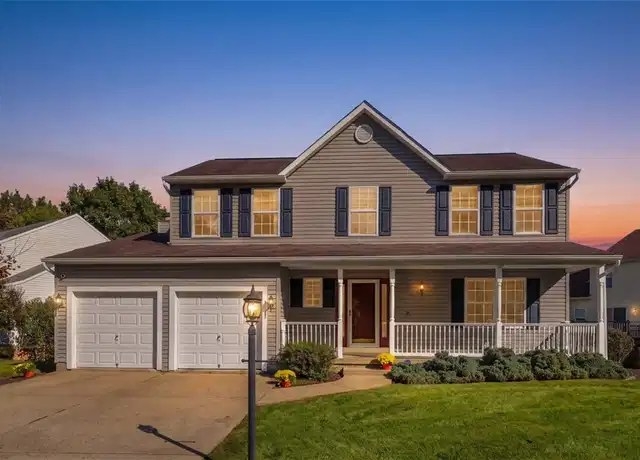
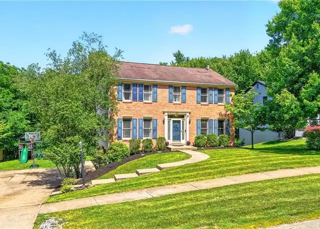
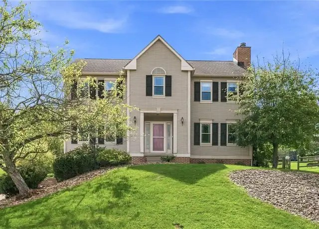
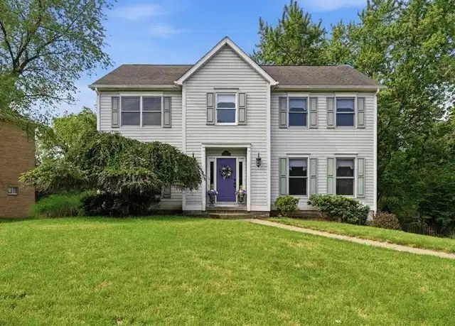
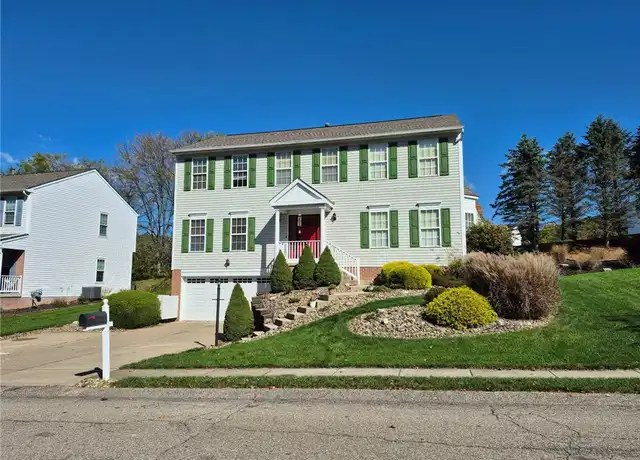
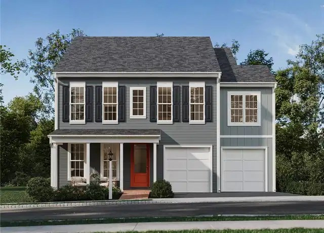

Thursday, October 29, 2026
Four new listings and two changes since Monday. One earlier home went under contract. Drive times are in minutes to Woodbine (Cranberry), then Foxwood (Mars), then Broadway (Wexford). They assume no traffic. Rush hour will probably add 10-25%.

01. 527 Pine Bluff Dr, Adams Twp (Adams Ridge), Butler County - $479,900 [NEW]
New to the list (MLS #1779170). Listed Oct 14 at $469,900. The price is now $479,900, and the listing now mentions a brand-new roof.
4 bed / 3 full + 1 half bath, sq ft not listed, built 1997, 0.19 ac tree-lined lot
Finished walk-out lower level (game room) that opens to a patio and the yard. Attached garage, which looks like a 2-car in the photo. Large maintenance-free deck.
Looks move-in ready: new roof with lifetime shingle warranty, newer Trane furnace and AC, new water heater, fresh neutral paint, hardwood on most of the main floor. HOA is $60 a month and includes the pool, clubhouse, courts and playground. Mars Area schools.
The yard is on the small side.
Drive: 19 / 9 / 15

02. 7020 Franklin Rd, Seven Fields, Butler County - $499,900 [NEW]
New listing Oct 28 (MLS #1781043). It was relisted: it has been on the market since June, starting at $535,000 and later $514,999.
4 bed / 2.5 bath, 2,088 sq ft, built 1991, 0.28 ac lot
Walk-out lower level with direct access to the garage and backyard. The listing calls it flexible living space but doesn't say it's finished. 2-car garage. Expanded deck, patio and a usable yard.
Updated kitchen with granite, fully renovated primary bath and hall bath, gas fireplace, and a bonus room for an office or playroom. Described as move-in ready. No HOA. Taxes about $5,200. Seneca Valley schools.
Drive: 16 / 11 / 8. Closest to Broadway of anything so far, and under 16 min to all three.

03. 333 Warrick Dr, Seven Fields, Butler County - $539,900 [PRICE CUT]
What changed: price cut by $10,000, from $549,900 to $539,900 (first sent Oct 23).
4 bed / 2.5 bath, 1,990 sq ft, built 1994, 0.29 ac lot
Large fenced yard, roomy 2-car garage, walk-out basement (not confirmed finished). Pre-inspected with a 1-year home warranty.
Drive: 18 / 11 / 11

04. 910 Poplar Pl, Cranberry Twp (Pinehurst), Butler County - $499,500 [ADDRESS NOW PUBLISHED]
What changed: this is the Pinehurst home from Oct 23 that had no address. The address is now published, and the price is the same. With the real location the drive times changed (Oct 23 estimate: 6 / 14 / 14).
4 bed / 3 full bath, 2,376 sq ft, built 1992, 0.39 ac private wooded lot (MLS #1779608)
Finished walk-out basement (31 ft game room) opening to a stone patio and a fenced backyard. 25x13 elevated deck. The garage is only 1-car according to public records.
New carpet in the bedrooms, family room and basement. Next to North Boundary Park (fields, playground, pool). It has been on and off the market since June (was $540,000, briefly under contract in August).
Drive: 14 / 15 / 18

05. 914 White Water Dr, Adams Twp (Adams Ridge), Butler County - $579,900 [NEW]
New listing Oct 27 (MLS #1781049).
4 bed / 2.5 bath, 2,580 sq ft, built 2000, 0.25 ac lot
Finished walk-out lower level with a game room and storage. A spacious built-in 2-car garage with a wall-mounted heater, workbench and shelving that all stay. Stone patio out back.
Hardwood floors, 9 ft ceilings, open kitchen with island, updated baths, French-door office. Looks move-in ready. Adams Ridge pool and courts. Taxes about $4,300. Mars Area schools.
About $30k over budget and a standard-size lot.
Drive: 19 / 10 / 15

06. Brookvue - Elgin model, 3500 Unionville Rd, Cranberry Twp, Butler County - $574,990 [NEW]
New model listing Oct 27 (MLS #1780993) in the same Brookvue community as the Oct 23 models.
New construction (2026) by Charter Homes. 4 bed / 2.5 bath, 2,567 sq ft, 0.15 ac lot
Attached 2-car garage. Unfinished lower level. Kitchen island, walk-in closet, tiled primary shower. Seneca Valley schools.
About $25k over budget, small lot, and the basement would need finishing.
Drive: 4 / 16 / 15
Photo is the builder's rendering from the listing.
130 Woodbine Dr, Cranberry Twp ($590,000, sent Oct 23) went under contract on Oct 27 and is no longer available. Every other home from earlier updates is still active at the same price, including 707 Dunbury Ct, 9239 Marshall Rd, the Bayberry Ln homes, 210 Trail Ct W, 397 Lincoln Ave, the other Brookvue models, and 7004 Jones Ln.
I only searched Butler County ZIPs and skipped Allegheny County. New or still-listed homes in Jackson, Evans City, Forward, Connoquenessing and Middlesex were left out because of long drives.
Prepared by your PA house search assistant
Photos are from the public Redfin listings.